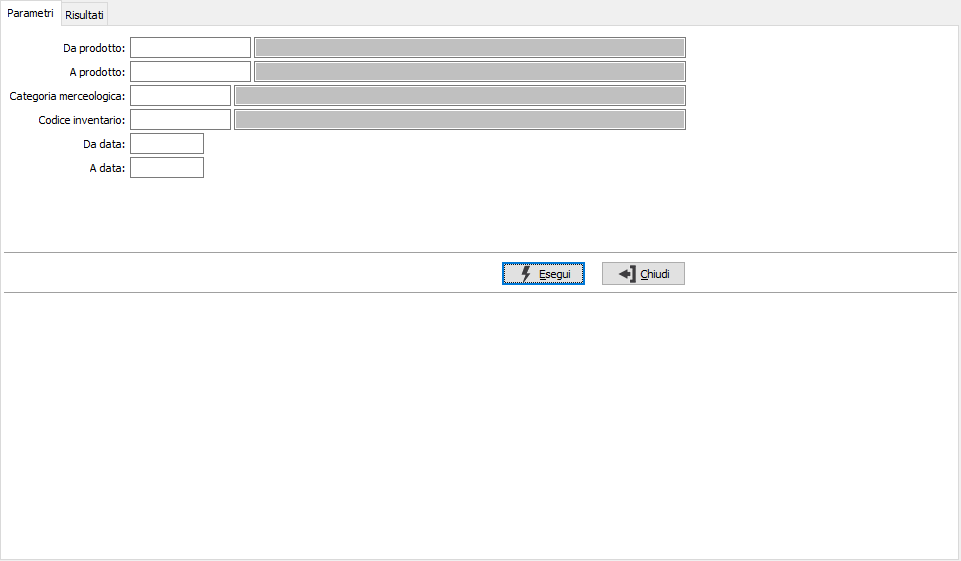
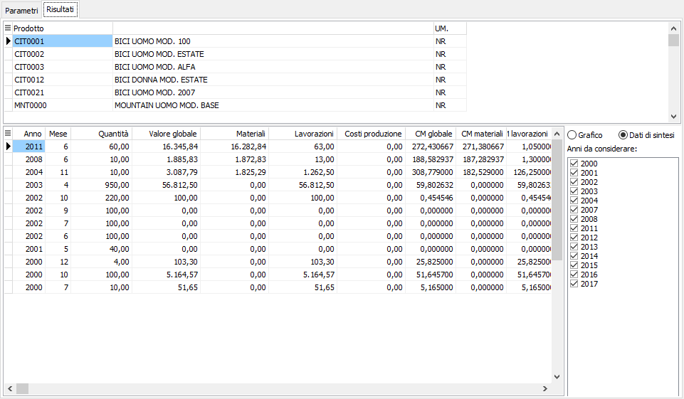
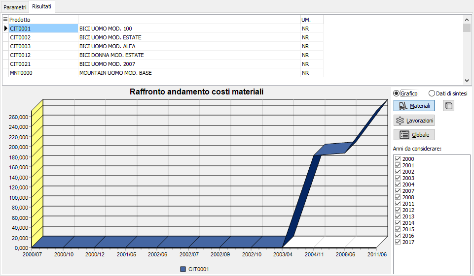
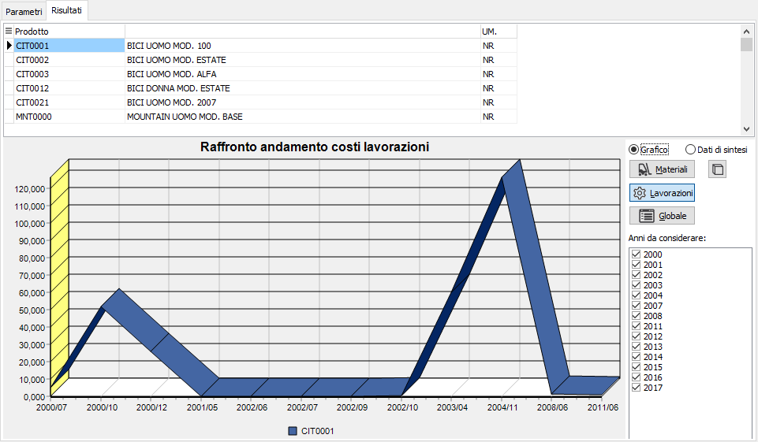
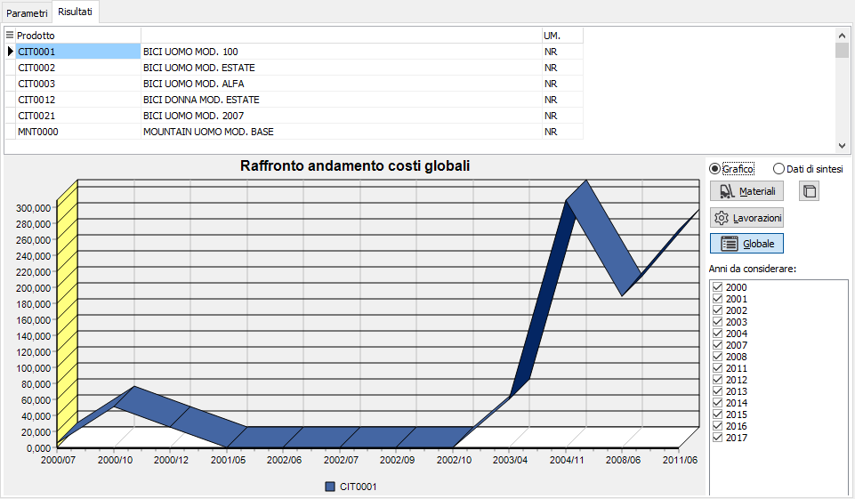

Analisi andamento costi
La funzione risponde all’esigenza di verificare l’andamento dei costi del composto nel tempo e quindi analizza l’andamento del costo unitario. I risultati ottenuti possono essere analizzati anche in forma grafica.
L'analisi si basa sui movimenti di magazzino e presenta diversi criteri di selezione tra cui un range di prodotti, la categoria merceologica, il codice inventario ed un periodo di date riferite alla movimentazione. .
Premendo il pulsante Esegui si avvia l'elaborazione che porterà alla pagina dei risultati.

Per ogni prodotto vengono riepilogati per anno e mese i totali di quantità, valore, materiali e Lavorazioni ed i relativi costi medi calcolati elaborando i movimenti di magazzino. Gli anni da considerare possono essere tolti oppure aggiunti semplicemente togliendo oppure apponendo la spunta dall'elenco Anni da considerare.
I valori delle colonne costo medio (CM) risultano utilizzando i seguenti calcoli:
CM globale: Valore globale / Quantità.
CM materiali: Materiali / Quantità.
CM lavorazioni: Lavorazioni / Quantità.

L'analisi può essere visualizzata anche graficamente, selezionando la voce Grafico sarà visualizzata la rappresentazione del grafico, selezionando la voce Dati di sintesi saranno visualizzati i valori. Se è selezionata la sezione Grafico saranno presenti tre pulsanti per alternare il grafico visualizzato tra andamento materiali, Lavorazioni o Globale; i grafici possono essere visualizzati in 3D o 2D tramite l'apposito pulsante.
Sulla pagina è disponibile la stampa di quanto visualizzato, dati di sintesi o grafico, accessibile tramite i bottoni Anteprima e Stampa presenti sulla toolbar.


